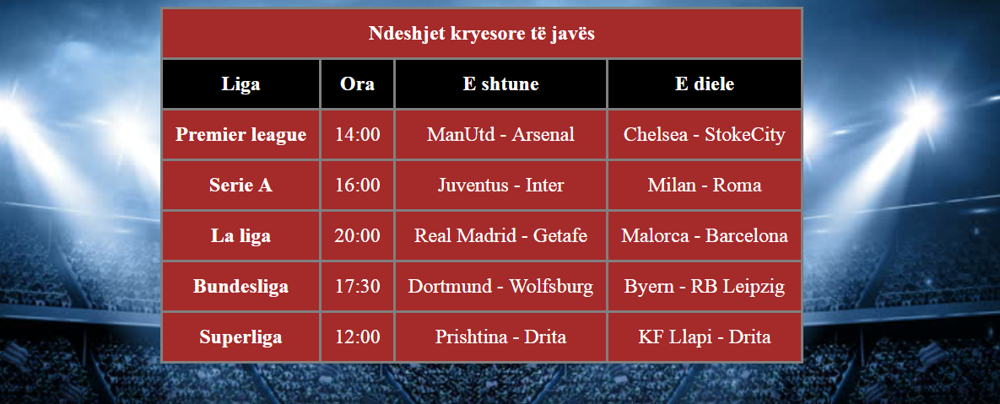
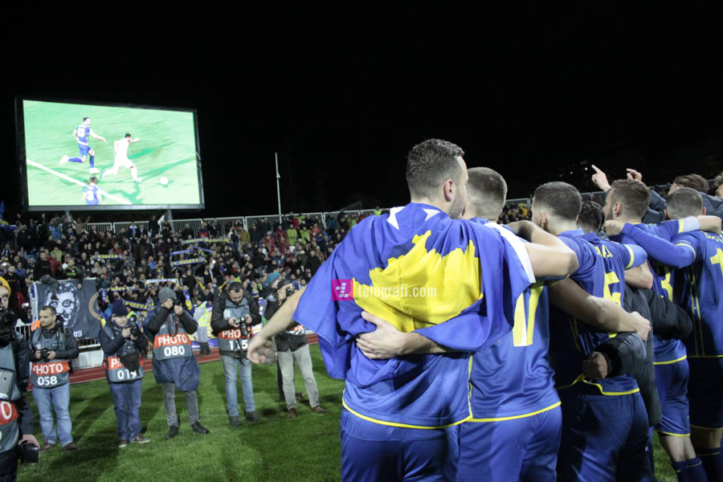

|
|
Chelsea ka gati ofertën e lartë për Skriniarin, sllovaku mund të bëhet mbrojtësi më i shtrenjtë në histori |
|
Chelsea është gati të bëjë një ofertë të ‘çmendur’ për ta transferuar mbrojtësin Milan Skriniar. Por klubi italian mund ta humbas lojtarin i cili është tunduar nga milionat e ekipeve angleze. E përditshmja italiane Tuttosport ka shkruar se Chelsea është gati ta bëjë Skriniarin mbrojtësin më të shtrenjtë në histori të futbollit. |
| Lajme të shpejta | |||
|---|---|---|---|
|  |  | ||
| Ndeshjet kryesore të fundjavës |
Sevilla do ta blejë përfundimisht Andre Silvan Sevilla do të ushtrojë mundësinë e tyre prej 30 milionë eurosh për të nënshkruar përfundimisht me sulmuesin Andre Silva, pavarësisht se Milani dëshiron që sulmuesi të rikthehet. |
Sergio Ramos dështoi në testin e dopingut në finalen e Ligës së Kampionëve Kapiteni i Real Madridit, Sergio Ramos, është kthyer në titujt e gazetave, por jo për arsye që njihet. |
Dy fitore të thella dhe kalimi në Ligën C të Ligës së Kombeve, Kosova pritet të ketë ngritje në ranglistën e FIFA-s Përfaqësuesja e Kosovës ka pasur një muaj fantastik, duke marrë dy fitore spektkolare në Ligën e Kombeve. |
| LATEST TWEETS | QUICK LINKS | LATEST BLOG POSTS | CONTACT US |
|---|---|---|---|
| @Endrit Përshëndetje, unë jam
Endrit Berisha dhe punoj si gazetar në Telegrafi dhe desha
të ju shkruaj dhe përgëzoj për punën që bëni.Vetëm vazhdoni
dhe ju premtoj se do ta keni mbështetjen tonë si portal
kurdoherë.
1 day ago |
Post titleAdmin,domainname.com Friday,6th April 2000 Nulla facilisi. Ut firngilla. Suspendisse potenti. Nunc feugiat mi a tellus consequat imperdiet.
|
||
| @Alisa.Mehmeti Tung! Unë jam Alisa Mehmeti
dhe jam studente e gazetarisë. Vetëm desha të ju shkruaj dhe të ju
falenderoj për qasjen që tregoni ndaj lexuesve.
Faleminderit. Ditën e mirë.
2 days ago |
Admin,domainname.com Friday,6th April 2000 Nulla facilisi. Ut firngilla. Suspendisse potenti. Nunc feugiat mi a tellus consequat imperdiet.
|
E drejta e autorit © 2018/2019 - Te gjitha te drejtet e rezervuara | Website nga Gr.2 - Lenda Interneti |